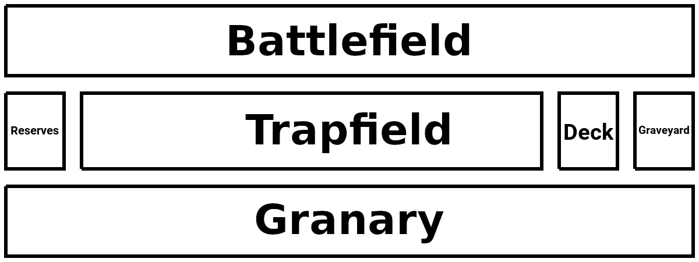

Rulebook (11th Edition)
Keeper of the Cards is a trading card game, loosely inspired by elements from various popular trading card games you may be familiar with. The primary distinguishing factor of Keeper of the Cards, however, is that you don't just trade cards; you create cards.
Unlike other trading card games, there are no official cards for Keeper of the Cards. Instead, there are official effect components that can be used for cards and official rules for calculating the cost of playing any given card. These rules are laid out separately in the Card Building Guide.
This document, on the other hand, serves to explain the rules of the game.
Contents
Card Types and Layout
There are two types of cards in Keeper of the Cards: creatures, and spells. Here are some examples of both:

The card on the left is a creature, and the card on the right is a spell. They are visually very similar; the only noteworthy difference is that spells have a pair of triangles instead of the additional elements found on a creature.
The elements marked on the cards are:
- The name of the card. This is purely cosmetic and has no effect on the game.
- The card image. This is purely cosmetic and has no effect on the game.
- The ability text of the card.
- Edition Indicator indicating the edition of the game the card was designed for.
- The level of the card.
- The flavor text of the card. This is purely cosmetic and has no effect on the game.
- The offensive power (“offense”) of the card.
- The defensive power (“defense”) of the card.
Setup and Deck Building
Prior to starting a game of Keeper of the Cards, you must assemble a deck and (optionally) a reserves. The deck must contain 40–60 cards, while the reserves can contain up to 5 cards. All cards must look the same from the back (this can be achieved by using sleeves if necessary). Other than that, there are no restrictions on what legal cards you can put in your deck.
You can find preëxisting sets of example cards, as well as instructions for how to print them, in the Starter Set.
Before each game, shuffle your deck. Draw 5 cards from your deck; this will be your starting hand. You begin the game with 35 HP, which you can note on a piece of paper or thru some other counter.
You should have a reasonable amount of six-sided dice (preferably at least 10–20 dice), and some objects such as coins or poker chips to use as counters. You must also determine who goes first. One suggested method is for each player to roll two six-sided dice and for the player with the highest roll to go first.
Keeper of the Cards can be played by 2 or more players. There is theoretically no limit, but it is recommended to keep the number of players small, preferably between 2 and 8. In the case of a game with more than two players, each player works alone with their own HP and field.
Fields
Each player has a field: a designated area where cards are played, divided into several distinct zones which each have a specific purpose. Each zone's contents are classified as either public knowledge, in which case all players are entitled to know what cards are in the zone; private knowledge, in which case all players are entitled to know the number of cards in the zone, but only its owner is entitled to know what cards are in the zone; or restricted knowledge, in which case all players are entitled to know the number of cards in the zone, but no player (not even its owner) is entitled to know what cards are in the zone. The zones are as follows:
- Deck: Typically to the right of the trapfield. The contents of the deck are restricted knowledge.
- Graveyard: Typically to the right of the deck. Any card which is destroyed or sacrificed is immediately sent here, face-down. The contents of the graveyard are private knowledge.
- Reserves: Typically to the left of the trapfield. You can retrieve a card of your choice from your reserves instead of drawing a card from the deck, either when drawing a card during the Resource Phase or when drawing a card due to a card effect. The contents of the reserves are private knowledge.
- Battlefield: Typically above the trapfield. Contains its owner's in-play creatures. The contents of the battlefield are public knowledge.
- Trapfield: Typically to the left of the deck. Contains its owner's in-play traps. The contents of the trapfield are private knowledge.
- Granary: Typically below the trapfield. Contains its owner's resources. The contents of the granary are private knowledge.
- Hand: Typically held in the hand. Contains the cards its owner currently has available to play. The contents of the hand are private knowledge.
Turn Order
Each turn in Keeper of the Cards consists of the following phases:
- Resource Phase: Place up to two cards from your hand, face-down, onto the granary, unexhausted. Then draw a number of cards equal to two minus the number of cards you placed into the granary. In other words, choose one of the following: (a) draw two cards (no resources placed); (b) place one resource and draw one card; or (c) place two resources (no cards drawn). See Resources, Exhaustion, and Recovery for more information about resource placement.
- Special exception: on the first turn of the game, the starting player only either places one card onto the granary OR draws one card.
- Action Phase: You may play any cards from your hand that you are able to, and you may also activate in-play creature abilities and in-play traps which have no activation condition. See Creatures and Casting Spells and Setting Traps for more information.
- Battle Phase: You may do battle with your unexhausted creatures. See Battles for more information.
- Recovery Phase: Every in-play card and every resource is unexhausted. Every in-play creature has its offense, defense, and level reset to the respective values printed on the card (reversing any damage or stat changes due to card abilities).
Resources, Exhaustion, and Recovery
Resources are used to summon creatures and cast spells. A resource can be any card. Resources are placed into the granary unexhausted (oriented vertically) during the Resource Phase (as explained above). When you place a resource into the granary, it is always played face-down, as its identity is not public knowledge.
Exhausted, for any card, means that the card cannot currently be used; this is marked by having the card in a horizontal (sideways) orientation. By contrast, unexhausted means that the card can currently be used; this is marked by having the card in a vertical (upright) orientation. To exhaust a card, rotate it to a horizontal orientation. To unexhaust a card, rotate it to a vertical orientation. Cards are only unexhausted during the Recovery Phase. (Players of Magic: The Gathering and some other games may recognize the exhaustion system as functionally identical to what those games call “tapping”.)
To pay a resource cost is to exhaust a number of unexhausted resources equal to a card's level. For example, to pay the resource cost of a level 3 card, exhaust three of your currently unexhausted resources by turning them sideways.
A card's level, and thus the number of resources you must exhaust for its resource cost, can never be less than 1. So for example, if a level 4 creature has its level reduced by 4, it becomes a level 1 creature and you must exhaust 1 resource to summon it.
During the Recovery Phase, all cards in every player's battlefield, trapfield, and granary are unexhausted. In addition, every creature in every player's battlefield has its offense, defense, and level returned to the respective values printed on it. This effectively reverses any stat changes that might have happened, including damage. As such, these stat changes effectively last only for the turn in which they take effect, even thô this is not explicitly stated in card effects.
For example, suppose you control a creature with a printed offense of 3 and a printed defense of 10. You could cast a spell to increase its offense by 4, at which point its offense becomes 7. It could then take 8 damage during a battle with another creature (see Battles), at which point its defense becomes 2. However, during the Recovery Phase, all of this creature's stats are reset to what is printed on its card, so its offense becomes 3 and its defense becomes 10.
Creatures
Creatures are cards which are used to do battle and may also have special abilities. Creatures must be summoned to the battlefield before they can be used, but once they are summoned, they can be used indefinitely as long as they remain on the battlefield.
To summon a creature, pay a number of resources equal to the card's level, and then place it, face-up and exhausted, into the battlefield. (See Resources, Exhaustion, and Recovery for more information about resources and exhaustion.)
Some creatures have caveats, special rules which apply to them. Caveats are always on the first paragraph of the ability text. Most caveats make use of special keywords; see Keywords for a list of explanations for all of these keywords.
Caveats may include such things as extra costs for summoning the creature, costs for attacking or defending, and restrictions on what the creature can do. Creatures with caveats that create requirements for summoning include a silhouette of a padlock behind the ability text (demonstrated by “Mourning a Loss” under Card Types and Layout). Such caveats are also conventionally colored red to make them stand out from the rest of the text.
Creatures can activate abilities, hold counters, and participate in battles; see Abilities, Counters, and Battles for more information.
Spells
Spells are cards that only have a single ability. Spells can be used in two ways: they can be cast from your hand, and they can be set as traps for use later.
To cast a spell, pay its resource cost, reveal the spell to all other players, follow the instructions on the card immediately, and send the spell to the graveyard. Just like with creature abilities, a spell with an activation condition can only be cast (either from the hand or as a trap) at the time that the activation condition says, and a spell with no activation condition can only be cast during your own Action Phase. Spells with activation conditions include a silhouette of a padlock behind the ability text (demonstrated by “Mourning a Loss” in Card Types and Layout). Spell activation conditions are also conventionally colored red to make them stand out from the rest of the text.
Casting a spell starts a chain; see Chains for more information.
Traps function the same way as spells, but the resource cost of a trap is paid when the trap is set and not when it is activated.
To set a trap, pay its resource cost, then place the card into the trapfield, face-down and exhausted.
Only unexhausted traps can be activated. To activate a trap, turn it over to reveal it to all other players, follow the instructions on the card, and then send it to the graveyard. (Do not pay its resource cost.)
See Abilities for more information about abilities in general.
Abilities
A card's abilities are indicated in the ability text. Spells have only a single ability, while creatures can have multiple abilities; where multiple abilities are available, each ability is contained in a separate paragraph. A creature ability may be given a name, designated in all caps at the beginning of the respective ability paragraph, followed by a colon. You can activate an ability of an unexhausted creature by exhausting it. You can only activate one ability at a time.
Some abilities have an activation condition indicating when to activate the ability. Activation conditions are followed by a colon (:) and appear at the very start of an ability's text. If an ability has an activation condition, you may only use the ability when the activation condition is met. If an ability has no explicit activation condition, you may only use it during your own Action Phase.
Some abilities also have an activation cost, which is a special cost (such as removing a certain number of counters or sacrificing one of your cards) that you must pay upon activation of the ability. Activation costs are followed by a semicolon (;) and appear toward the start of an ability's text. If you activate an ability you are unable to fully pay the activation cost for, the ability has no effect.
Activating a creature ability starts a chain; see Chains for more information.
Many abilities make use of special keywords; see Keywords for a list of explanations for all of these keywords.
Counters
Some abilities manipulate or utilize counters. A counter is a special marker which can be placed on an in-play creature (but not a trap or resource). Any available object can be used as a counter. Counters stay on the creature they are placed on until either the creature leaves the battlefield, or an ability removes them.
The simplest counters are generic counters. On their own, generic counters have no effect. These are typically removed from creatures as activation costs, enabling more powerful effects, or simply required for targeting. No player is permitted to remove generic counters from any card unless an ability does so.
However, some abilities can also place special named counters, which in addition to being usable as normal counters, can be voluntarily removed to trigger special effects. The following rules apply to all named counters:
- These counters can be removed (and their effects triggered) literally at any time, that is to say, during any phase of any player's turn, even immediately after placing them, triggering the stated effect.
- With the exception of Dice Counters and Immortality Counters, removing a named counter to trigger its effect starts a chain or, alternatively, you can remove a named counter to trigger its effect in response to an existing chain. See Chains for more information.
- Removing counters for their effects does not require exhausting the creature it is on since the effect is that of the counter, not of the creature.
- The player who placed a counter is considered to be the counter’s “owner” and “controller” and is the one who can remove it for its effect, regardless of who the controller of the creature is. For example, if you place one of these counters on a creature controlled by an opponent, it is you who can then remove the counters to trigger the effect, and the opponent cannot do so. Note that this restriction only applies to the effect of the counter itself; there is no restriction on how any counter, including a counter with an effect, can be removed for an activation cost or by a card effect.
- For timing purposes, note that when an opponent activates an ability, that ability’s activation cost is paid and its target is selected immediately, meaning that e.g. you cannot remove counters for an effect to render an activation cost impossible unless you do so before the opponent indicates their intention to activate the respective ability. As such, to avoid conflict, if you intend to prevent an opponent from using an ability by removing a named counter during the Resource Phase, you should announce this intention prior to the start of that turn.
Following is a list of named counters which are currently available, and an explanation of each one’s special effect (activated by removing the counter). Note: “the card” refers here to the card that the counter was removed from.
- Offense Counter: Increase the card’s offense by 1.
- Defense Counter: Increase the card’s defense by 5.
- Weakness Counter: Decrease the card’s offense by 1.
- Damage Counter: Roll a six-sided die and inflict damage to the card equal to the result.
- Exhaustion Counter: Exhaust the card.
- Dice Counter: Re-roll any one die (no matter who rolled the die initially).
- Unlike other named counters, removing a Dice Counter to activate its effect does not start a chain and cannot be done in response to a chain; instead, the Dice Counter is removed at the moment a die roll happens that you want to re-roll. As a result, its usage can be hindered by effects that remove counters as long as those effects are timed correctly.
- Immortality Counter: Prevent the card from being destroyed, siloed, bounced, deck-stacked, or hypnotized by an effect that would explicitly do so.
- This refers the effect portion of an ability only; it does not include costs of abilities that may destroy a card. It also does not include destruction as a result of damage even if that damage was inflicted by an effect.
- Unlike other named counters, removing an Immortality Counter to activate its effect does not start a chain and cannot be done in response to a chain; instead, the Immortality Counter is removed in place of normal card destruction at the moment the destruction effect is resolved. As a result, its usage can be hindered by effects that remove counters as long as those effects are timed correctly.
Battles
To battle, go thru the following steps (only during the attacking player's Battle Phase):
- The attacking player exhausts any number of their unexhausted creatures, which become the attacking team, and declares one target: a player, or a creature. Any given player or creature can only be targeted once per Battle Phase. The attacking player selects and announces the defending order of the attacking team (the order in which these creatures will be damaged).
- The target player, or the owner of the target creature, may exhaust any number of their own unexhausted creatures (which may or may not include the target itself), which become the defending team. If they do this, they then select and announce the defending order of the defending team (the order in which these creatures will be damaged).
- The attacking player rolls a number of six-sided dice equal to the total offense of the attacking team, and the defending player rolls a number of six-sided dice equal to the total offense of the defending team.
- Each player must take each of their dice, one at a time (in any order), and inflict the result as damage to the next surviving creature in the other player's team (based on the respective defending order selected) until either all dice are used or all creatures in the respective team are destroyed.
- If the target and any of the attacking team's dice remain, inflict the total result of these remaining dice as damage to the target.
- If the target was a player and any of the defending team's dice remain, inflict the total result of these remaining dice as damage to the attacking player.
For the purposes of timing, steps 4–6 are considered to happen simultaneously. This can matter for certain abilities, and it also means that if both players' HP reach zero during a battle, both players will lose simultaneously. To facilitate this, any action which starts a chain cannot be taken during this time frame and must wait until step 6 is completed.
To inflict damage to a creature, subtract the damage amount from the creature's defense, and then if the defense is less than or equal to zero, destroy the creature. For example, if 8 damage is inflicted to a creature with 15 defense, that creature will have 7 defense left and not be destroyed. If 8 damage is inflicted to a creature with 8 defense, however, that creature will have 0 defense left and be destroyed. Note: it is possible for creatures to initially have 0 defense; in such a case, any amount of damage will destroy the creature.
As an example, consider an attacking team with two creatures (Creature A and Creature B) that each have 2 offense and 5 defense plus one creature (Creature C) that has 2 offense and 10 defense, targeting a player. The attacking player declares that they are attacking the defending player, and declares their defending order as “Creature C → Creature A → Creature B”. The defending player then chooses to defend with two creatures (Creature D and Creature E) that each have 1 offense and 10 defense, and declares their defending order as “Creature D → Creature E”. The attacking player rolls 6 dice, and the defending player rolls 2 dice. Suppose the attacking player rolls the following numbers: one, six, five, five, three, six; while the defending player rolls the following numbers: six, two. The defending player applies both the six and the two to the first attacking creature (Creature C), reducing its defense to 2; it survives. The attacking player chooses to apply a six, a three, and the one to the first creature (Creature D), reducing its defense to 0 and destroying it; then apply the two fives to the second creature (Creature E), reducing its defense to 0 and destroying it. Since all of the defending team's creatures have been destroyed and one die is left over, the remaining die (the other six) is applied as damage to the target (in this case, the defending player), so the defending player loses 6 HP.
During your Battle Phase, you may initiate as many battles as you want to as long as you have unexhausted creatures remaining; however, you may not select the same target more than once in the same Battle Phase. For example, you cannot attack a player with one creature and then attack that same player with another creature within the same Battle Phase. However, you can use one creature to attack one of a player's creatures and then use a different creature to attack the owner of that creature, for example.
Chains
Due to activation conditions on abilities and the nature of how named counters work, it is possible for multiple players to simultaneously be able to perform certain actions. Chains exist to clarify what exactly happens in these situations.
The following actions all start a chain:
- Activating a creature's ability (after paying the activation cost).
- Casting a spell (after paying its required cost).
- Removing a named counter to activate its effect.
When a chain starts, the action which started the chain becomes the first chain link. Then, all players, starting with the turn player and then going clockwise, are given an opportunity to respond to the chain in one of the following ways, creating an additional chain link instead of starting a new chain:
- By activating a creature ability or spell with an activation condition that has been met (immediately paying the activation cost).
- By removing a named counter to activate its effect.
If any player decides to respond to the chain, all players are again given the opportunity to respond to the chain. This process is repeated until all players decide not to respond to the chain.
Once all players are done responding to the chain, the chain begins resolving: in reverse order (starting with the most recent chain link and working backwards), each chain link's effects are actually executed, which is referred to as resolving the effects.
For example, when resolving a chain where chain link 1 is an ability with the effect, “Destroy the targets,”, and chain link 2 is the effect of a Weakness Counter, then resolution of the chain goes as follows:
- The effect of the Weakness Counter removed for chain link 2 resolves, decreasing the offense of the card it was on by 1.
- The effect of the ability activated for chain link 1 resolves, destroying the cards it targeted.
Only one chain can be active at a time, and no actions which start a chain can be performed while a chain is resolving. If the effects performed within a chain satisfy an activation condition of a creature ability or spell, said creature ability or spell can be activated after the chain finishes resolving, starting a new chain.
Winning and Losing
Any given player can lose in one of three ways:
- By having their HP reduced to zero.
- By having an empty deck.
- By voluntarily forfeiting.
Any player who loses is out of the game and can no longer affect the game in any way. When only one player remains in the game, that player is declared the winner. If all remaining players are eliminated at once (e.g. if all remaining players have their HP reduced to zero at the same time, or by all drawing their last card at the same time), the game ends in a draw.
Keywords
This section lists common keywords used in card text, including any important nuances for said keywords.
Action Cost
An action cost is a caveat indicating a cost that must be paid to attack with, defend with, or use an ability of the creature, in addition to the usual requirement to exhaust the creature.
Batch Add
To batch add is to add a total amount to the indicated stat of the targets, distributed among them. For example, if an effect tells you to batch add 5 offense to three targets, you might give 1 offense to the first target, 1 to the second target, and 3 to the third target.
Batch Subtract
To batch subtract is to subtract a total amount from the indicated stat of the targets, distributed among them. For example, if an effect tells you to batch subtract 7 offense from two targets, you might subtract 2 offense from the first target and subtract 5 offense from the second target.
You are not allowed to reduce a creature's offense or defense stats below 0. For example, if an effect tells you to batch subtract 3 offense from two targets, where the first target has 1 offense and the second target has 5 offense, you can only subtract 1 from the first target, meaning the second target must lose at least 2 offense.
Berzerker
Berzerker is a caveat which causes the creature to be destroyed if it is unexhausted at the end of your own Battle Phase. In other words, you must attack with, use an ability of, or otherwise exhaust the creature every turn to keep it on the field.
Bounce
To bounce a card is to place it in its owner's hand.
Controller
The controller of a card is the player whose zone it is in, regardless of who its owner is. So for example, if you use an effect to summon an opponent’s creature, the owner of that creature is still your opponent (and therefore it gets sent to that player’s graveyard when destroyed, for example); but while it remains in your battlefield, you are its controller and can use it the same way as cards in your battlefield that came from your own deck.
When the controller of a card changes (as can happen with the hypnotize effect), its location is implicitly changed to the field of its new controller, in the zone it was in when its controller changed. For example, if a creature in the battlefield of player 1 is hypnotized and its controller changed to player 2, it is moved to the battlefield of player 2.
Counter
See Counters for an explanation of what counters are and how they work, including a list of special named counters.
Deal
To deal a number of cards is to cause all players to draw that number of cards from their respective decks (including yourself).
Deck-stack
To deck-stack a card is to place it on top of its owner's deck. When deck-stacking multiple cards, you can place them on top of their respective owners' decks in any order.
Deploy
To deploy a card means to play it as if it was in your hand. This is optional for each deployed target. In other words, it means for each deployed target, you may (but are not required to) do one of the following:
- Summon the card (if it is a creature).
- Cast the card (if it is a spell).
- Set the card as a trap (if it is a spell).
Just as when playing the card normally, you must pay all usual costs, including any applicable summon costs for creatures and activation costs for spells, and any creature summoned or trap set is placed onto the battlefield or trapfield exhausted.
Cards which are already in-play cannot be deployed and thus are excluded.
Destroy
To destroy a card is to cause it to be sent to the graveyard, just as if defeated by battle. This can be used to trigger effects which activate on destruction of a card.
Dice-burn
To dice-burn a player is to roll the indicated number of six-sided dice and reduce their HP by the total indicated on the dice. For example, to 2-dice-burn a player, roll two six-sided dice; if the results of the dice are 6 and 1, the player loses 7 HP.
Dice-burn effects which affect both the player using the effect and another player may lead to both players' HP reaching zero at the same time. In this case, if these two players are the last players in the game, the game ends in a draw.
Dice-damage
To dice-damage a set of targets is to roll the indicated number of six-sided dice and inflict damage to targeted in-play creatures utilizing the results of the dice (as if in a battle). Each die can be used to damage any targeted in-play creature, and the decision of which die to use is made after rolling all of the dice.
Dice-heal
To dice-heal a player is to roll the indicated number of six-sided dice and increase their HP by the total indicated on the dice. For example, to 3-dice-heal a player, roll three six-sided dice; if the results of the dice are 4, 1, and 3, the player gains 8 HP.
Down-level
To down-level a card is to subtract the amount from the card's level. A card's level can never be lower than 1; for example, if you down-level a level 3 card by 3, its resulting level will be 1 and not 0, since no card is allowed to be level 0.
The down-level effect persists for the card until the Recovery Phase, regardless of where the card was when it was down-leveled and where it moves to. This means, for example, that you can down-level a creature in your hand to reduce the number of resources needed to summon it.
Draw
To draw a card is to take the topmost card from your deck, or alternatively, take any card of your choice from your reserves, and add that card to your hand.
Each
When the term each is used to refer to targets, it means that each target is affected separately, e.g. any decision required by the effect is made for each card separately (and thus can differ between them).
Enemy's Choice
Enemy's choice indicates that cards which are being targeted or used as a cost are selected by any one opponent of your choice. For example, if a creature has a Summon Cost listed as, “Exhaust 2 creatures (enemy's choice),” the chosen opponent decides which two creatures you will be exhausting.
In some target selections, the number of possible targets can be variable. In these cases, the chosen opponent does not choose the number; rather, you choose the number, and the chosen opponent selects exactly that number of targets.
If an enemy's choice selection is of cards in the deck, graveyard, or hand, the chosen opponent (and no other player) gets to see all applicable choices. If the selection is of in-play cards or resources, however, the chosen opponent does not gain access to any new non-public knowledge and their selection must be informed by the information already available to them.
Excavate
To excavate cards is to pick them up from the top of your deck as a part of a target selection. The cards picked up are referred to as excavated cards. The excavated cards are still considered to be within the deck in their original positions.
You must excavate only the exact number of cards indicated. If your deck currently has fewer cards than the number of cards the ability instructs you to excavate, no cards are excavated; thus, the ability in question cannot continue and has no further effect.
The player who chooses which excavated cards are targeted, and no other player, sees the excavated cards.
Exhaust
To exhaust a card means to turn it sideways. Conversely, to unexhaust a card means to turn it upright. Only in-play cards and resources can be exhausted.
Fatigue
To fatigue a card means to prevent it from being affected by the next Recovery Phase. This means that it will not be unexhausted, and any stat changes that occurred during the turn remain in effect. This effect does not stack; if one card is fatigued twice in one turn, only the effects of the Recovery Phase of that turn is skipped for the card, and the following Recovery Phase acts on it as normal.
Hypnotize
To hypnotize a card means to change the target's controller to a different player. For example, you could hypnotize a creature controlled by an opponent so that you control the creature instead.
Only in-play creatures and traps can be hypnotized. When the hypnotize effect ends, the hypnotized card's controller is changed back to the controller it had prior to the hypnotize effect resolving.
In-play
The term in-play refers exclusively to non-destroyed creatures in the battlefield, and unactivated traps. Creatures cease being in-play the moment they are destroyed, sacrificed, or otherwise moved to any location other than the battlefield. Traps cease being in-play the moment they are destroyed, activated, or otherwise moved to any location other than the trapfield.
Resources are never considered to be in-play under any circumstance. Additionally, spells activated from the Hand are not considered to be in-play at any point.
It
The term it within an ability refers to the ability's target. The term is used only in cases where the ability can only ever have a single target.
Owner
The owner of a card is always the player whose deck it originates from, regardless of who its controller is.
Reveal
To reveal a card is to show it to all players, including yourself.
Sacrifice
To sacrifice a card is to send one of your cards to the graveyard as a cost. The text will specify which of your cards you are to sacrifice. Sacrificed cards are not considered to be “destroyed” and thus do not trigger effects which activate on destruction of a card.
See
To see a card means to learn what the card is, without showing any other player. For example, if an effect has you see a card in an opponent's hand, you are allowed to see what the card is, but other players are not.
Self-destroy
To self-destroy a card is to destroy one of your cards as a cost. The text will specify which of your cards you are to self-destroy. Unlike sacrificed cards, self-destroyed cards are considered to be “destroyed” and thus can trigger effects which activate on destruction of a card.
Self-exhaust
To self-exhaust a card is to exhaust one of your unexhausted cards as a cost. The text will specify which of your cards you are to self-exhaust.
Silo
To silo a card means to place it into its owner's granary, exhausted. As with placing resources normally, siloed cards are placed onto the granary face-down.
Summon Cost
A summon cost is a caveat indicating an additional cost that must be paid to summon the creature in addition to exhausting resources as normal.
Target
Used as a verb, the word target instructs on how to select the targets of an ability. Used as a noun, target or targets refers to all cards which have been selected by the aforementioned target selection text. (All targeted cards remain targeted throughout execution of the ability, regardless of where they are. For example, while it wouldn't make much sense, it would be entirely possible and allowed for an ability to summon a creature and then destroy that same creature, even thô the creature's location changed when it was summoned.)
The same card cannot be selected as a target multiple times at once for a given ability activation. For example, if an ability instructs you to target up to 5 in-play cards, you must select 5 separate in-play cards; you cannot "stack" the ability's effect by targeting a single card multiple times.
Up to
Used in target selections, the phrase "up to" precisely means any integer between 1 and the indicated number (selected by the card's controller). For example, "up to 3" means the controller of the card chooses 1, 2, or 3. (Note: the number 0 cannot be selected; if there is no valid target, the ability has no further effect.)
You
As used in card text, you and yourself always refer to the player who is using the card in question, i.e. its controller or the player summoning or casting it, regardless of who its owner is. Similarly, your always refers to that player's field, and cards whose controller is that player.
Revised and Banned Cards
As the game develops, cards made for old editions become outdated and no longer valid in new editions. This section documents all such cases, as well as cases where card text modifications have been applied that retroactively change the behavior of previously designed cards.
Clean Slate Edition
11th Edition is considered to be a clean slate edition, meaning that any card not bearing an Edition Indicator, or any card whose Edition Indicator indicates an edition prior to 11th Edition, is automatically considered to be a banned card (meaning it cannot be used in a game).